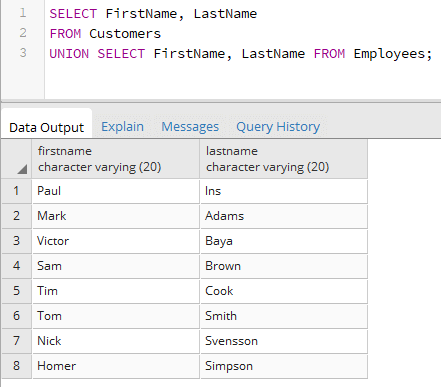
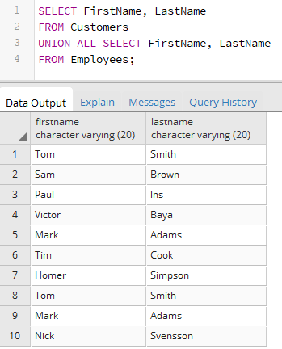
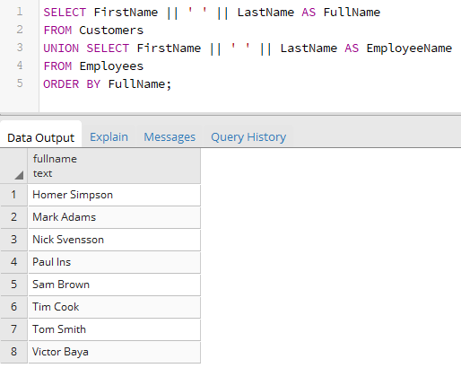
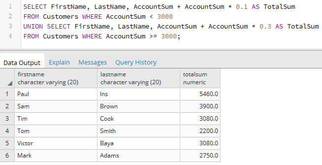

Вернуться на главную страницу →
Вернуться на главную страницу →
Объединение множеств. UNION
Оператор UNION позволяет объединить два множества (условно две таблицы). Но в отличие от inner/outer join объединения соединяют не столбцы разных таблиц, а два однотипных набора в один. Формальный синтаксис объединения:
Например, пусть в базе данных будут две отдельные таблицы для клиентов банка (таблица Customers) и для сотрудников банка (таблица Employees):
Здесь мы можем заметить, что обе таблицы, несмотря на наличие различных данных, могут характеризоваться двумя общими атрибутами - именем (FirstName) и фамилией (LastName). Выберем сразу всех клиентов банка и его сотрудников из обеих таблиц:
В данном случае из первой таблицы выбираются два значения - имя и фамилия клиента. Из второй таблицы Employees также выбираются два значения - имя и фамилия сотрудников. То есть при объединении количество выбираемых столбцов и их тип совпадают для обеих выборок.
Если оба объединяемых набора содержат в строках идентичные значения, то при объединении повторяющиеся строки удаляются. В случае с таблицами Customers и Employees сотрудники банка могут быть одновременно его клиентами и содержаться в обеих таблицах. При объединении в примерах выше всех дублирующиеся строки удалялись. Например, исходя из начальных данных, мы видим, что два человека: Tom Smith и Mark Adams располагаются в обеих таблицах. Однако при объединении дубли не считаются, поэтому один человек учитывается только один раз.
Если же необходимо при объединении сохранить все, в том числе повторяющиеся строки, то для этого необходимо использовать оператор ALL:
При этом названия столбцов объединенной выборки будут совпадать с названия столбцов первой выборки. И если мы захотим при этом еще произвести сортировку, то в выражениях ORDER BY необходимо ориентироваться именно на названия столбцов первой выборки:
В данном случае каждая выборка имеет по одному столбцу, который представляет объединение имени и фамилии клиента или сотрудника. Для объединения строк применяется оператор ||. Но в случае с клиентами столбец будет называться FullName, а в случае с сотрудниками - EmployeeName. Тем не менее для сортировки применяется название столбца из первой выборки и он же будет в результирующей выборке:
Если же в одной выборке больше столбцов, чем в другой, то они не смогут быть объединены. Например, в следующем случае объединение завершится с ошибкой:
Также соответствующие столбцы должны соответствовать по типу. Так, следующий пример завершится с ошибкой из-за не соответствия по типу данных:
Здесь первый столбец первой выборки имеет тип CHARACTER VARYING, то есть хранит строку. Первый столбец второй выборки - Id имеет тип INTEGER, то есть хранит число.
Объединять выборки можно и из одной и той же таблицы. Например, в зависимости от суммы на счете клиента нам надо начислять ему определенные проценты:
В данном случае если сумма меньше 3000, то начисляются проценты в размере 10% от суммы на счете. Если на счете больше 3000, то проценты увеличиваются до 30%.
